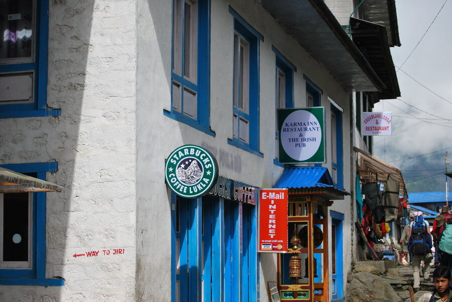
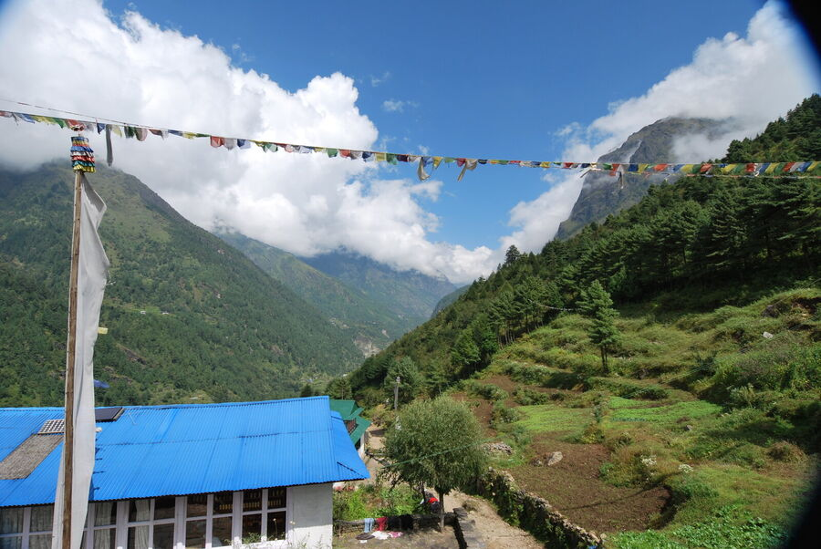
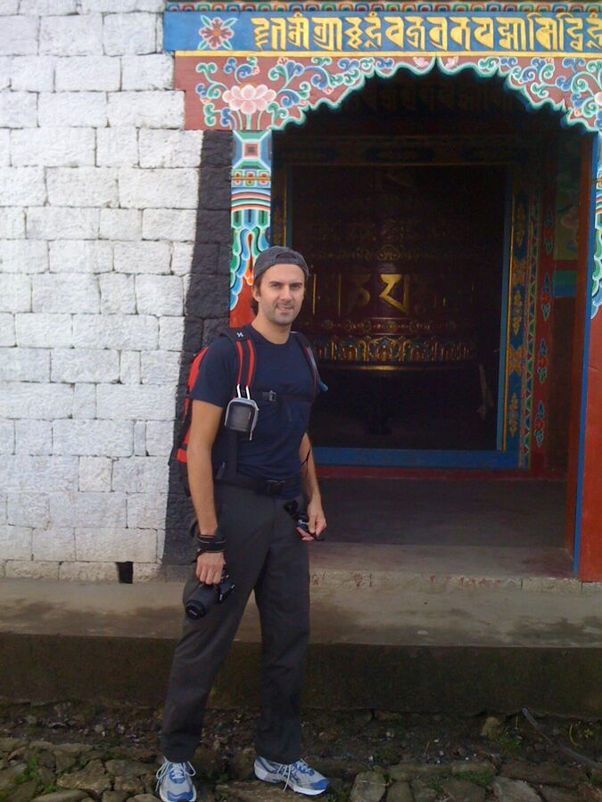
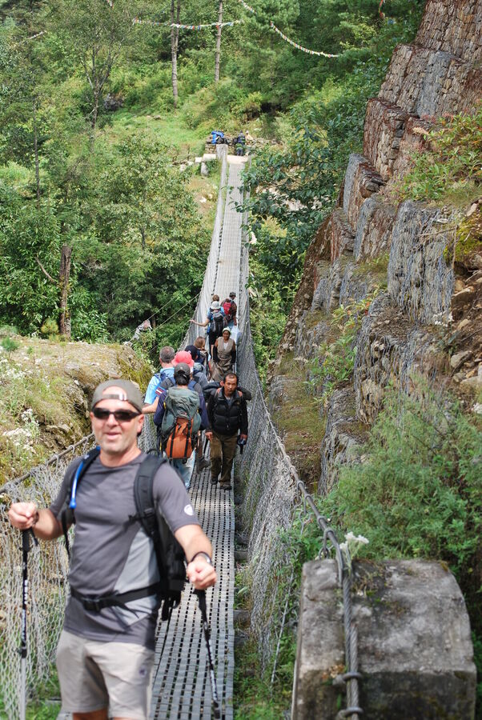
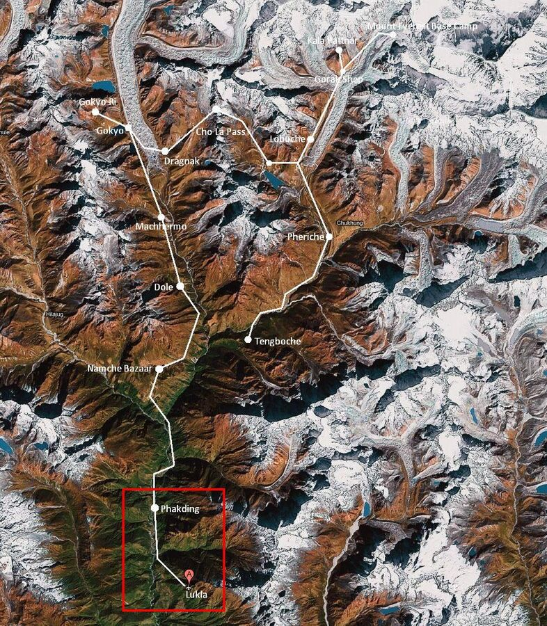

Today the alarm went off at 4:30. At 5 we met in the lobby for tea and coffee. Then minibuses took us to the airport. On the way we got packed lunches that tasted so-so.

After check-in we headed to the planes. 16 people fit into each of the twin-propeller aircraft. Our airline had the catchy name "Yeti Airlines".
The take-off was silky smooth. The flight was great, through and above the clouds, with mountains to the left and right almost at our height. In the distance the 8,000-metre peaks flashed through the clouds.
Then the landing: the plane headed straight for a mountain, where Lukla's extremely short runway is (maybe 300 metres???). The plane touches down, lurches and makes the turn just in time before the end of the runway – the mountain face. By the way, last year a plane with German tourists crashed here: 18 dead (18 killed in Lukla crash). Good thing I had no idea beforehand.

Lukla is a small place, really just one street. You can get everything here, even Coca-Cola or Pringles. Well, maybe not everything. There's even a Starbucks – unbelievable but true (see photo). There's also a Nepal Investment Bank, where we changed some more money. We were told we'd need about 200–300 EUR for drinks – mainly water.
The tours into the Khumbu region start in Lukla – 2,850 m up, by the way. Today we first descended to Pakding at 2,600 m. That's a stage of about 2 hours. The path is very stony. Sometimes there are big rock steps built in. You really have to watch your step so you tread safely and don't slip or twist an ankle badly. Short stretches also went uphill, and our pulse shot up immediately – even though we were still right at the bottom.

The landscape is breathtaking. The mountains are already high and everything is very green. Every few hundred metres there are a few guesthouses where you can buy water (or Coke, chocolate bars or Pringles). Locals sit by the wayside. Men in the garden, women with cows, mothers washing laundry or their children. All reserved but friendly.

Again and again porters come towards us or overtake us – carrying our own luggage. One Sherpa carries 2–4 bags – I could barely carry my own. And they're a head or two shorter, slight, mostly poorly equipped – but tough.
You keep passing small Buddhist shrines. There you can turn a prayer wheel (see photo) and make a wish. Or you pass piles of stone tablets with prayers carved into them, or huge, beautifully painted boulders. These objects often stand right in the middle of the path, and you always pass them on the left.

Halfway there we came to our first steel suspension bridge over a river. Pretty high – or deep – the whole thing. And wobbly, very wobbly. A real highlight.
In the course of the stage we got closer and closer to a river that winds its way, strong and roaring, between the mountain ranges. The weather was very nice today, even hot at times. That's why you should put on high-factor sunscreen, especially as the sun is strong up here. In shady areas it quickly turns cool. You sweat a lot. The special clothing is excellent, because you also dry off very quickly. At this altitude you should drink at least 4 litres of water or tea to avoid altitude sickness.
At around 12:30 we arrived in Pakding (2,600 m). Admittedly we were pretty worn out. We're staying in a small lodge by the path. The rooms only have 2 foam-padded cots where we lie in our sleeping bags. Toilet and shower are down the corridor. The toilet is much like one at a busy German motorway service station – in other words, dirty. We didn't shower today. You brush your teeth with bought water so you don't get diarrhoea. Raw fruit or salad is taboo too.
For lunch I had fried rice, for dinner fried noodles. Carbohydrates are important, especially as tomorrow brings an extremely tough stage with 800 metres of ascent. Today we still hiked in trainers. From tomorrow it's boots only. Hopefully the weather stays this nice. We did sleep for 3–4 hours after lunch, but it's nearly 9:30 pm now and we need to be fit for tomorrow.
So good night. I'm going to sleep now.
